Sistemas Actuales de Computación
Global log:
Synchronization and coordination:
No global time! & Different observers - Theory of Relativity -
In ethernet protocol, the network has to be considered asynchronous:
Some algorithms assumes a upper bound
Hardware clock (\(H\)): crystal oscillator. Its frequency varies with temperature, voltage, aging… so it drifts from true time.
Drift rate: how much the clock gains/loses per unit of real time relative to a perfect reference (e.g. \(10^{-6}\) \(\Rightarrow\) 1,µs error per second).
Software clock (\(C\)): what the OS exposes to applications:
\[C(t) = \alpha\, H(t) + \beta\]
The OS typically slews time (gradually updates \(\alpha\), \(\beta\)) instead of jumping the clock, to keep timestamps monotonic. Protocols such as NTP estimate offset and drift from external references and feed those corrections to the OS.
Two related goals (let \(C_i(t)\) be the software clock of process \(i\), and \(t\) real time):
Internal synchronization (consistency among nodes):
\[|C_i(t) - C_j(t)| < \delta \quad \forall i,j\]
Clocks agree with each other within bound \(\delta\) — enough for many distributed algorithms.
External synchronization (accuracy w.r.t. real time / UTC):
\[|C_i(t) - t| < \varepsilon \quad \forall i\]
Requires an authoritative time source (atomic clock, GPS, NTP stratum-1).
External sync \(\Rightarrow\) internal sync with \(\delta = 2\varepsilon\), but not the converse.
NTP (Mills, 1995) — standard for synchronizing clocks over the Internet.
Below: two classic master–client schemes that motivate how physical sync works (and what bounds we can prove).
References:
Assumptions: known lower bound \(\mathit{min}\) on message delay; optional upper bound \(\mathit{max}\).
\[C_i(t') := t + \mathit{min}\]
Why \(+\mathit{min}\)? The message cannot arrive earlier than \(\mathit{min}\), so this never sets the client ahead of the master.
If delay \(\in [\mathit{min},\mathit{max}]\), the error vs. the master is bounded by \(\mathit{max}-\mathit{min}\) — and that bound is optimal for one-way broadcast.
Also called Cristian’s algorithm (1989) (request–reply):
Round-trip time: \(RTT = T_2 - T_0\).
Best estimate of master time when the reply arrives (assuming symmetric delays):
\[C_i(T_2) := T_1 + \frac{RTT}{2}\]
Error bound: at most \(RTT/2 - \mathit{min}\) (worst case: all extra delay on one path).
Prefer samples with small \(RTT\); discard outliers - the same idea NTP uses with many probes.
Ecosystem: WiFi SAC + 2 Raspberry Pis.
| Role | Host | User/pass |
|---|---|---|
| Pi1 | 192.168.0.102 |
uib / hola |
| Pi2 | 192.168.0.103 |
idem |
As client, measure one interrogation against one-random raspberry:
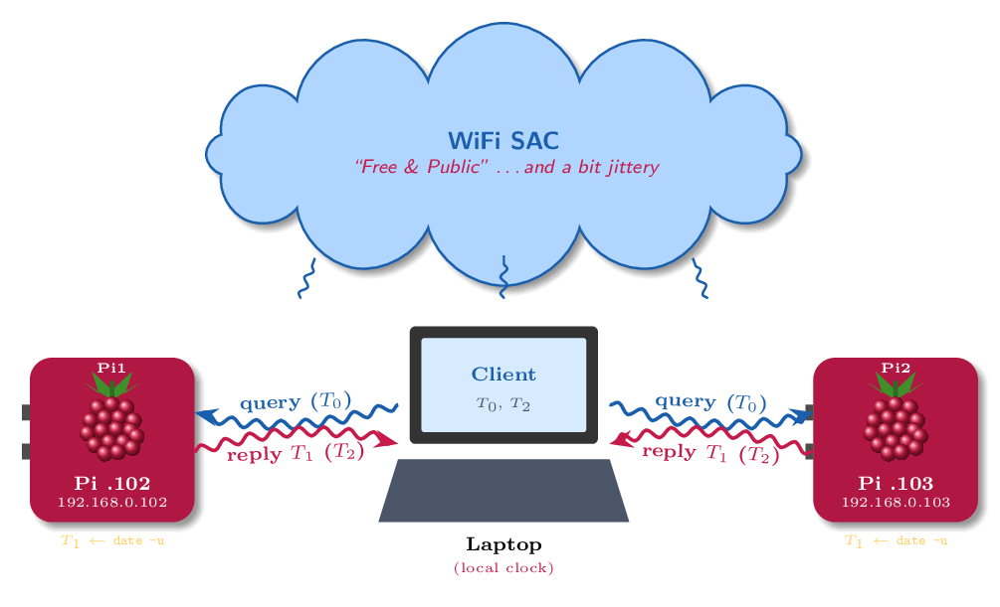
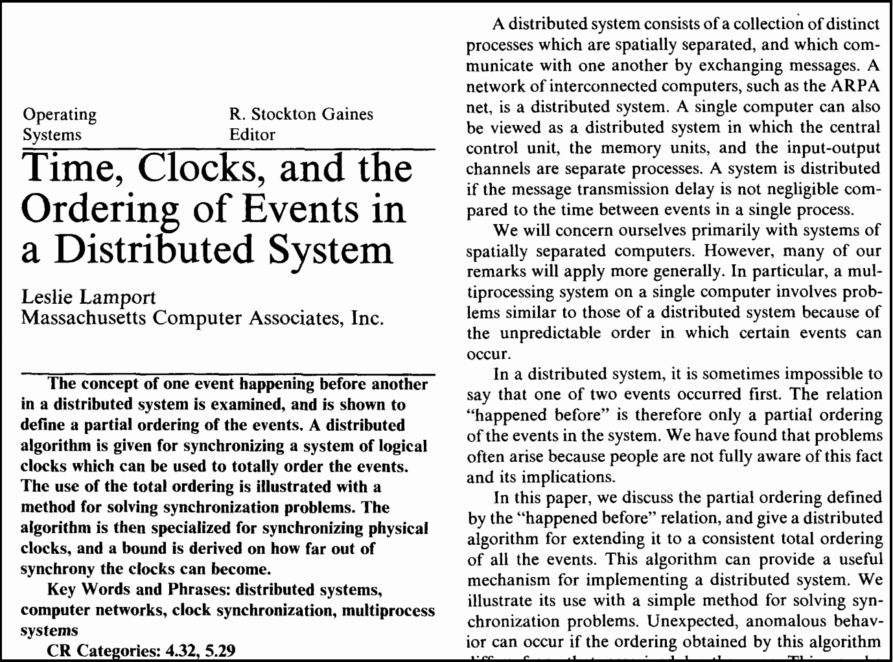
Lamport posited two requirements for logical clocks:
These two requirements capture all internal causality between any two events in the system
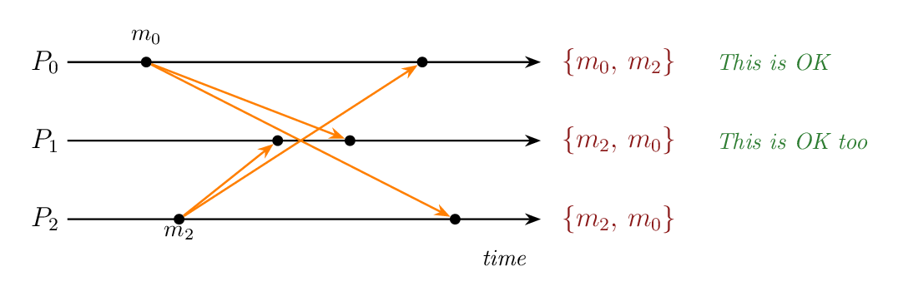
Different processes may observe different delivery orders when sends are concurrent, and that can still be OK.
Both messages are concurrent
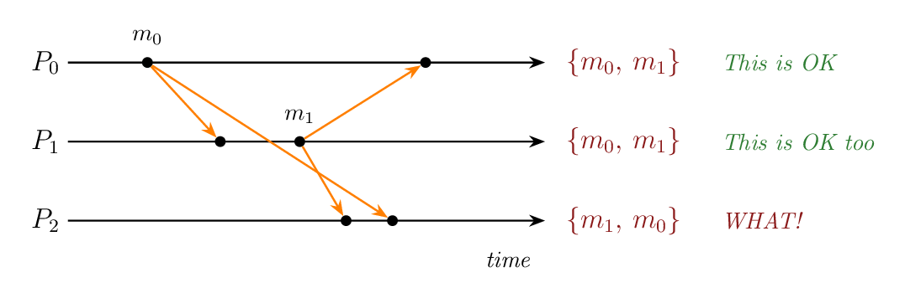
Casual Ordering
\(m_1\) is causally dependent on the receipt of \(m_0\)
\(m_1\) must be delivered only after \(m_0\) has been delivered
Thus, we can define sequence of events.
Lamport’s happened-before (\(\Rightarrow\)) is only a partial order. Motive: in a distributed system there is no global real-time order we can observe. We can only relate events that are causally connected (same process, or send/receive, or a transitive chain).
So \(\Rightarrow\) deliberately leaves some pairs incomparable.
A Lamport logical clock is a monotonically increasing software counter; its value need not match any physical clock.
Each process \(i\) keeps a counter \(C_i\). Stamp every event \(e\) with \(C(e)\):
Clock condition (correctness):
\[e \Rightarrow e' \;\Longrightarrow\; C(e) < C(e')\]
So causality is reflected in timestamps. The converse is false: \(C(e) < C(e')\) does not imply \(e \Rightarrow e'\) (they may be concurrent).
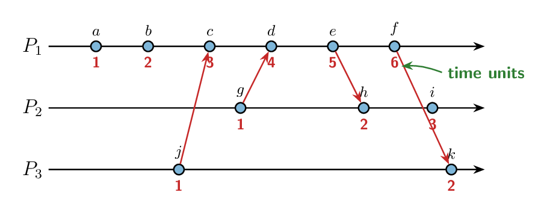
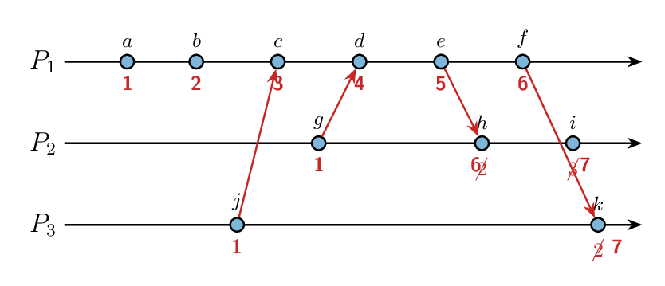
Identify the concurrent events
Let \(\le\) be a binary relation on a set \(X\) of events.
Common properties (both orders):
Partial order (poset): the three properties above.
Some pairs may be incomparable: neither \(a \le b\) nor \(b \le a\)
(e.g. Lamport’s \(\Rightarrow\); concurrent events \(a \parallel e\); Git commit DAG / branches).
Total order: a partial order that is also total:
\[\forall a,b \in X:\quad a \le b \;\lor\; b \le a\]
Every pair is comparable. One agreed sequence.
Which requires a total ordering solution?
And, how we can choose between \(a\) or \(b\) when \(a \parallel b\)?
Lamport timestamps \(C(e)\) alone are not unique: concurrent events may share the same value, so they do not yet give a total order.
Extend each stamp with the process identity. For an event on process \(i\):
\[\tau(e) \;=\; \bigl(C(e),\, i\bigr)\]
Total order on stamps (tie-break by process id):
\[ \tau(e) < \tau(e') \;\iff\; C(e) < C(e') \;\lor\; \bigl(C(e)=C(e') \;\land\; i < j\bigr) \]
where \(e\) occurred at process \(i\) and \(e'\) at process \(j\).
This yields a total order that extends \(\Rightarrow\): if \(e \Rightarrow e'\) then \(\tau(e) < \tau(e')\). When \(a \parallel b\), the process id decides which comes first.
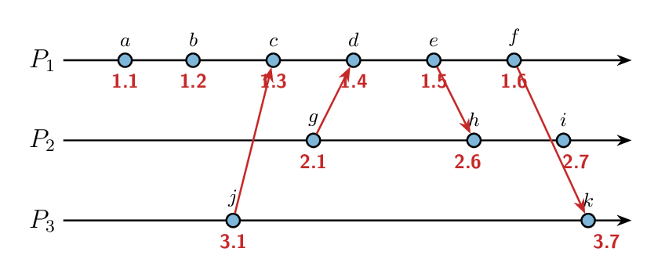
\[ \tau(a) < \tau(j) \;\iff\; C(e) < C(j) \;\lor\; \bigl(C(e)=C(j) \;\land\; 1 < 3\bigr) \]
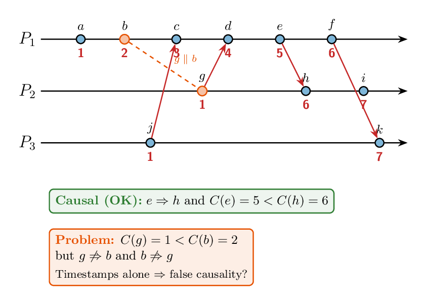
Vector clocks address a fundamental limit of Lamport clocks: \(C(e)<C(e')\) does not tell you whether \(e\) caused \(e'\) or they are concurrent.
Lamport numbers only respect causality; they cannot detect concurrency. It is a artificial order total.
Vector clocks restore that distinction.
Mattern (1989) (Mattern 1989) and Fidge (1991) (Fidge 1991): each process keeps an \(N\)-vector that tracks causal history from every process: not a single counter!
Let \(V_i\) be the vector clock at process \(i\) (\(i=1,\ldots,N\)): multiples counters!
Pseudo-algorithm
Example (merge only, before the local \(+1\)):
| \(P_1\) | \(P_2\) | \(P_3\) | \(P_4\) | |
|---|---|---|---|---|
| received \(V_m\) | 0 | 5 | 12 | 1 |
| local \(V_j\) | 2 | 8 | 10 | 1 |
| \(\max\) | 2 | 8 | 12 | 1 |
Comparing events stamped \(V\) and \(V'\):
Vector Clock Scenario (our task)
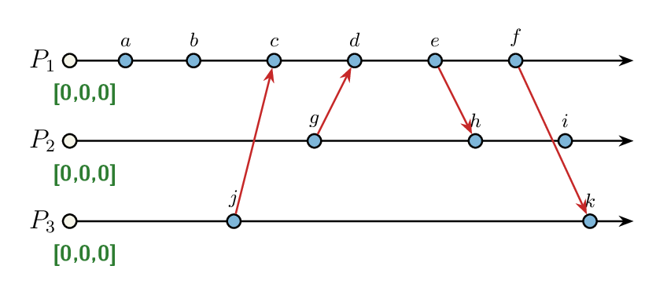
Vector Clock Scenario (your activity)
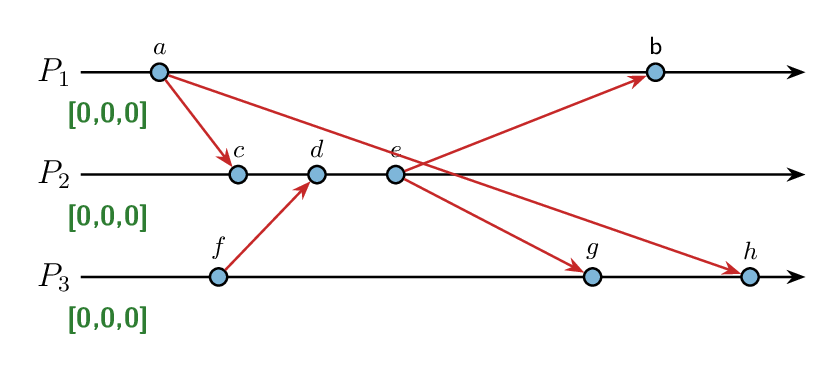
Vector Clock Scenario (your activity)
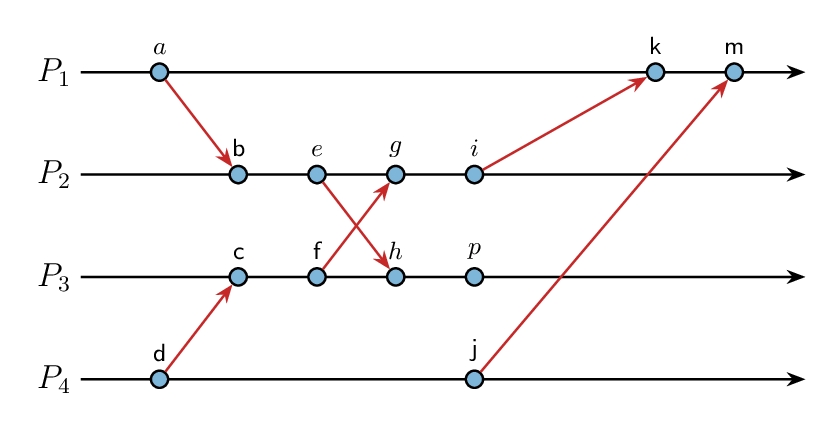